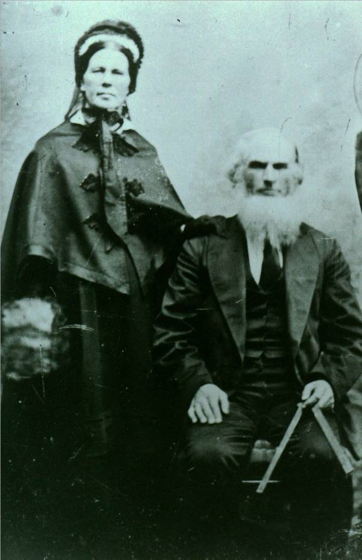
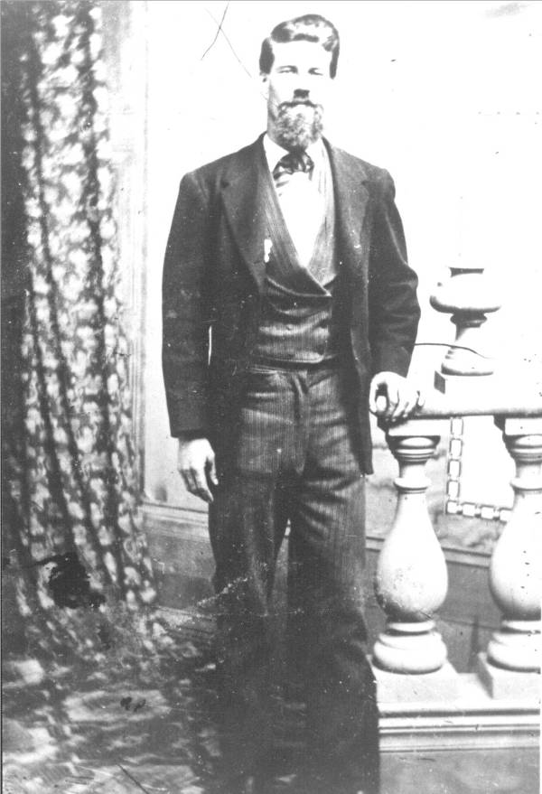
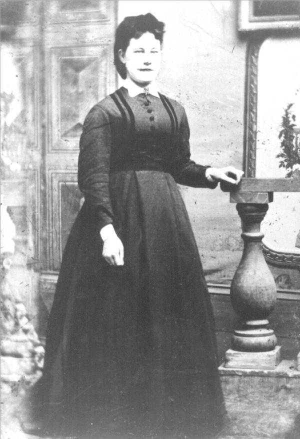

The Family Chronicle
No.59 January 23,2004
________________



Photos
I am grateful to Cameron MacDonald for copies of the photos appearing on the left. We are not certain, but they may be my GGGrandparents, Alexander and Grace (McAskill) MacDonald, their son, John and his wife, Elspeth Jardine.
Alexander MacDonald (top left), my GG Grandfather, was born in Assynt, Scotland in 1775 and died in Little Branch in 1843. His wife, Grace MacAskill was born in 1781 in Assynt, Scotland and died on February 23, 1874 in Little Branch. Alexander MacDonald was granted 225 acres (Lot No.2) at Little Branch on June 3, 1812. They had nine children. The original house, I believe, was in the field above where Norman Glendenning now lives near the old apple orchard.
John D. MacDonald, (centre left) my Great Grandfather, (1817-1900) owned the land where Uncle Jim Watling lived; his sister, Jessie, owned the land where Norman now lives. (Each received half of the original property) John married Elspeth Jardine, (1821 –1907). They had 10 children including a daughter Grace, my Grandmother, (1848 – 1934) who married Jubal Watling (1846 – 1915). Jubal and Grace lived for a while at the Meadows but moved to Little Branch in 1901.
Again, these may or may not be correct but I thought that you would be interested.
Grandmother
I barely remember my Grandmother Watling. She died in 1934 but I do recall her as a small wiry woman. I can remember her buttoning the top button of my shirt or buttoning my windbreaker because she thought I would get sick from the cold.
Update
A note from Arthur Mills tells me that George Dutcher of Hardwicke owned a sloven that he used to haul the thresher and other large machines. Enid says her Grandfather had one in Sussex and she thought that they were manufactured in Saint John.
Dorothy MacKay recalls an incident during WW2 in which a truck overturned on Johnny Dick’s hill spilling peaches, pears, green gage plums and perhaps other kinds as well. Local kitchens buzzed for days as they preserved the fruit before it spoiled.
I wonder if that could have been Jack MacMaster’s truck from Hardwicke. I know that he used to truck apples and perhaps he trucked other fruit, and even fish, as well.
On late afternoon, Jack MacMaster turned into our place with a big load of apples that he was selling from door to door. His truck broke through the bridge by the concrete gatepost. I remember the dual wheels down through the bridge but cannot recall how he got out. He may have had to unload the apples.
Robert Stevens
I was delighted to hear recently from Robert Stevens who provided some new information about the Peters family (My Grandmother was Elizabeth Peters.) I do not have enough information yet to make a clear statement on our relationship but we can both trace roots back to William and Anne (Bidders) Harley. I’ll have more on this later.
Web Page
I am delighted that most of you seemed to have found my new web page and thank Brian for making it possible. Thank you also for your notes. For those of you seeing this for the first time, copies of Newsletters are posted at www.glendenning,net
Follow-up
My Christmas card of the Little Branch Bridge brought back memories to Marjorie (Watling) Young. As a youngster, when returning home from the Cameron’s after dark, Iona and Wilna would walk back with her as far as the bridge. Iona and Wilna would stand at their end of the bridge while Marjorie ran through. Once on the other side, Iona and Wilna would go back home. Sometimes the boys would hide in the bridge, it was unlighted, just to scare the girls.
The Chronicle is an occasional newsletter published by Don Glendenning It is designed to share information about my family, community and the times in which I grew up. While every effort is made to be accurate, errors are likely to occur. Comments, enquiries and information may be sent to 62 Queen Elizabeth Drive, Charlottetown, PEI, C1A 3A9. Tel: 902-892-5859 Email: don@glendenning.net Web: www.glendenning.net